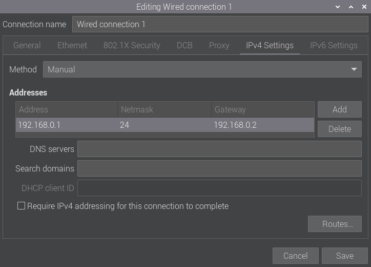
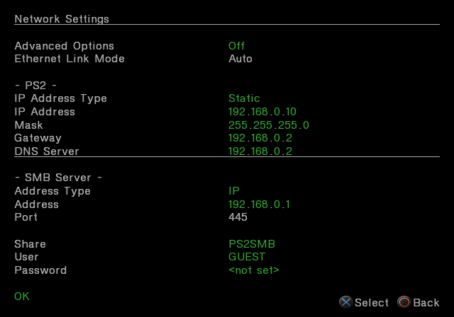

Using the SSD Kit for PS2SMB with the Pi 5.
(How endless suffering lead to making a write up on what to do.)
So this is a "basic" tutorial dealing with the Raspberry Pi 5 and the SSD Kit.
Most of this guide will be using terminal (Ctrl + Alt + T).
And this guide assumes you already have Open PS2 Loader running on your PS2.
This guide is also assuming that you have installed the drive into the Pi,
and it's been formatted to NTFS, and you have games on the drive in the folder layout.
Part 1: Mounting The Drive in Raspberry Pi OS
We can now do the following:
> lsblk
This is to make sure the kit is installed.
In my case it's "
> blkid /dev/
This is to get the UUID for a later step in this part.
In my case it's "
This part will also confirm to me that my drive is formatted to ntfs.
Next we're going to make a folder to mount the drive to (Linux is case sensitive):
> sudo mkdir /mnt/
In my case I've made the mounted drive "
You can name it to whatever you prefer here.
You can also now validate if you're able to mount your drive by writing the command:
> sudo mount /dev/
After mounting you want to give yourself full permission to the folder:
> chmod 777 /mnt/
Now we want to set up the drive to automatically mount:
> sudo gedit /etc/fstab
Personally I use gedit as my text editor as I dislike looking through a terminal (nano).
And now we can add this line towards the bottom of the file:
# PS2SMB (/dev/
UUID=
Save and reboot your Pi. It should now automatically mount.
Part 2: Setting up the Networking
Before going through the terminal, let's first set up our Ethernet.
Within the Wired Connection create this IPv4 setting to the following:

The netmask being "24" is just the CIDR notation of "255.255.255.0".
After that, we can now open up the terminal and install the following:
> sudo apt install samba samba-common-bin
Then we can load into the new file created by samba:
> sudo gedit /etc/samba/smb.conf
Towards the top of the configuration file place the following:
[global]
client min protocol = LANMAN1
server min protocol = LANMAN1
client max protocol = SMB3
server max protocol = SMB3
Towards the bottom create this new section:
[
comment =
path = /mnt/
browseable = yes
read only = no
guest ok = yes
public = yes
available = yes
Part 3: Setting up Open PS2 Loader
When connecting a Network Cable between the PS2 and Pi,
I found better results using a Crossover Cable rather than a standard one.
It has been reported that the standard one works fine as well,
but I'm showcasing what works better for me personally.
When using Open PS2 Loader enter "Network Settings"
and you can copy the settings provided here:

Select "Reconnect" then "Ok".
Be sure to save the settings.
And that's it.